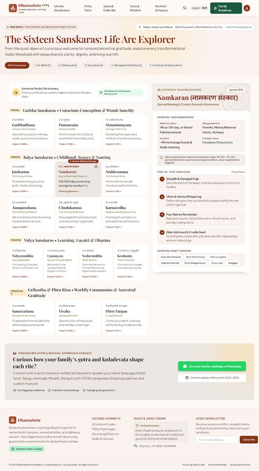
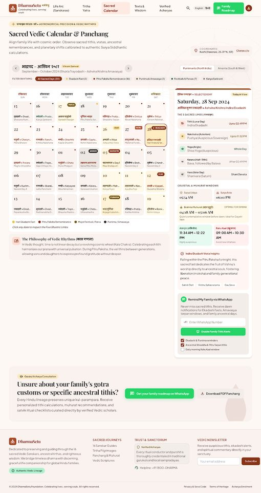
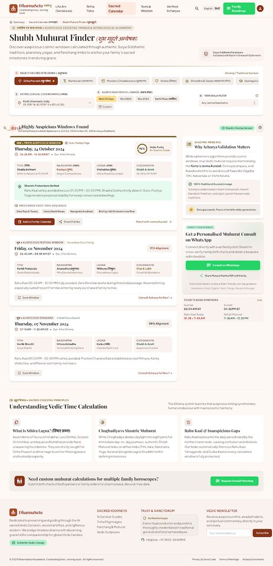
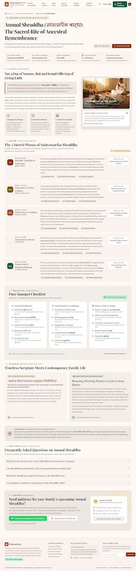

 2. Life Arc (Sanskars) Sixteen sanskar explorer with stage filters and detail panel. Open live HTML →
 3. Sacred Calendar Panchang month view with tithi highlights and muhurat windows. Open live HTML →
 4. Muhurat Finder Event picker and sample muhurat results (see known issues). Open live HTML →
 5. Annual Shraddha guide Rite process, phases, samagri, FAQ, WhatsApp consult. Open live HTML →